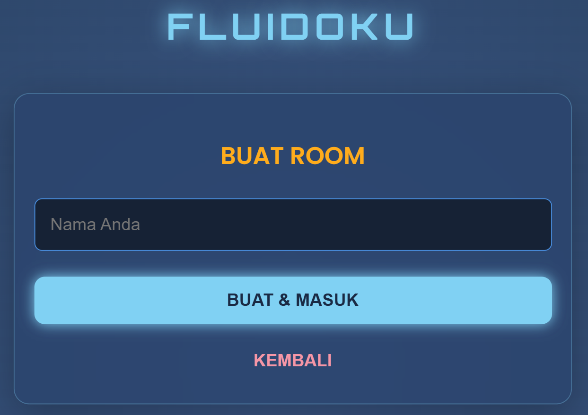
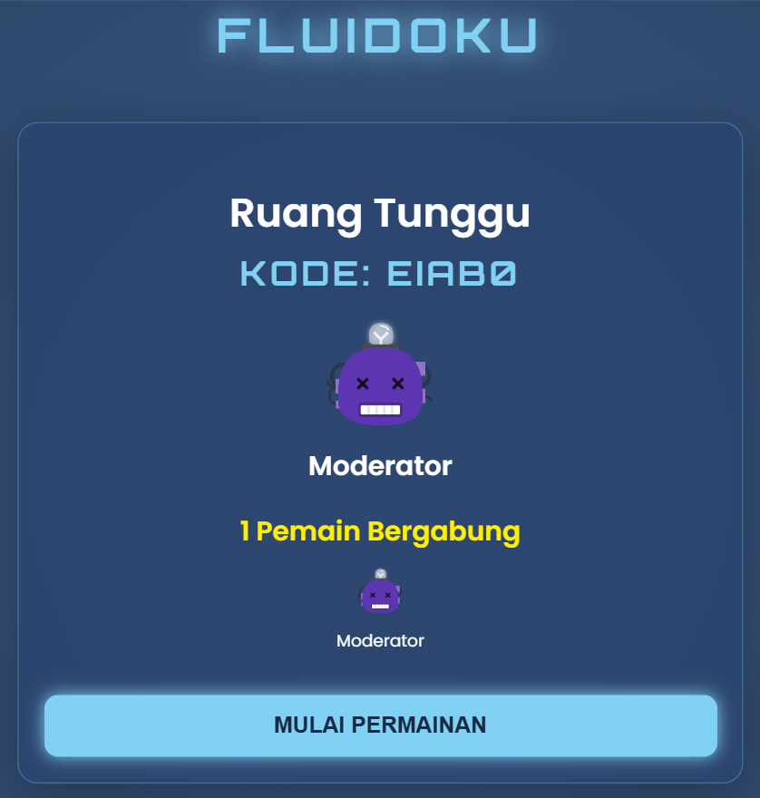
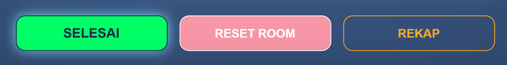

Fluidoku merupakan media evaluasi formatif berbasis permainan yang mengintegrasikan permainan Sudoku dengan soal-soal Fluida. Selain sebagai sarana pembelajaran yang interaktif, Fluidoku juga dirancang sebagai alat evaluasi formatif untuk membantu guru memantau perkembangan belajar peserta didik selama proses pembelajaran berlangsung.
Melalui permainan ini, guru dapat mengamati keterlibatan peserta didik, memperoleh rekap hasil belajar secara otomatis, serta menganalisis tingkat kesulitan setiap butir soal. Sementara itu, peserta didik memperoleh umpan balik langsung mengenai hasil belajarnya beserta materi yang masih perlu dipelajari kembali.
👑 Membuat Permainan Baru
- Pada halaman utama, pilih menu "BUAT PERMAINAN BARU"
- Masukan nama, lalu tekan menu
"BUAT & MASUK" - Sistem akan membuat kode room secara otomatis.
- Bagikan kode room tersebut kepada seluruh peserta didik.
- Pada Ruang Tunggu, guru dapat melihat daftar peserta didik yang telah bergabung serta memastikan seluruh peserta didik telah siap mengikuti permainan.
- Setelah seluruh peserta didik bergabung, klik “MULAI PERMAINAN” untuk memulai keseruan.



🎮 Pelaksanaan Permainan
- Selama permainan berlangsung, guru berperan sebagai fasilitator yang memantau jalannya permainan serta perkembangan belajar peserta didik.
- Guru dapat mengamati proses permainan melalui papan Sudoku, peringkat sementara (leaderboard), notifikasi aktivitas pemain, serta meninjau soal-soal Fluida Dinamis yang digunakan selama permainan.
- Kotak yang memiliki ikon 🧠 merupakan kotak soal Fluida. Peserta didik harus menjawab soal dengan benar sebelum dapat mengisi angka pada kotak Sudoku tersebut.
- Guru dapat meninjau soal-soal yang muncul selama permainan untuk memastikan kesesuaian materi pembelajaran.
Mengakhiri Permainan & Evaluasi Hasil Belajar
- Setelah seluruh peserta didik selesai bermain atau kegiatan pembelajaran telah berakhir, klik tombol "SELESAI".
- Setelah permainan berakhir, setiap peserta didik akan memperoleh hasil akhir berupa skor, badge (achievement), serta umpan balik mengenai materi yang masih perlu dipelajari kembali.
- Klik tombol "REKAP" untuk mengunduh laporan hasil evaluasi dalam format Microsoft Excel (.xlsx).
- Laporan terdiri atas dua sheet, yaitu:
- Rekap Nilai, berisi nama peserta didik, skor permainan, jumlah jawaban benar, jumlah jawaban salah, jumlah percobaan, waktu penyelesaian, dan nomor soal yang berhasil dijawab.
- Analisis Soal,berisi jumlah peserta didik yang menjawab benar, jumlah kesalahan, total percobaan, serta rata-rata percobaan penyelesaian pada setiap nomor soal.


- Setelah laporan berhasil diunduh, klik tombol "RESET ROOM" untuk menghapus seluruh data permainan sehingga room siap digunakan kembali pada pembelajaran berikutnya.

💡 Pemanfaatan Hasil Evaluasi
Hasil permainan tidak hanya menunjukkan skor akhir peserta didik, tetapi juga memberikan informasi mengenai jumlah jawaban benar, jumlah kesalahan, jumlah percobaan, waktu penyelesaian, serta analisis setiap butir soal.
Guru dapat memanfaatkan data tersebut untuk:
- Mengidentifikasi materi yang masih sulit dipahami peserta didik.
- Menentukan peserta didik yang memerlukan kegiatan remedial maupun pengayaan.
- Mengevaluasi tingkat kesulitan setiap butir soal berdasarkan jumlah jawaban benar, jumlah kesalahan, dan rata-rata percobaan.
- Merancang tindak lanjut pembelajaran pada pertemuan berikutnya berdasarkan hasil evaluasi permainan.